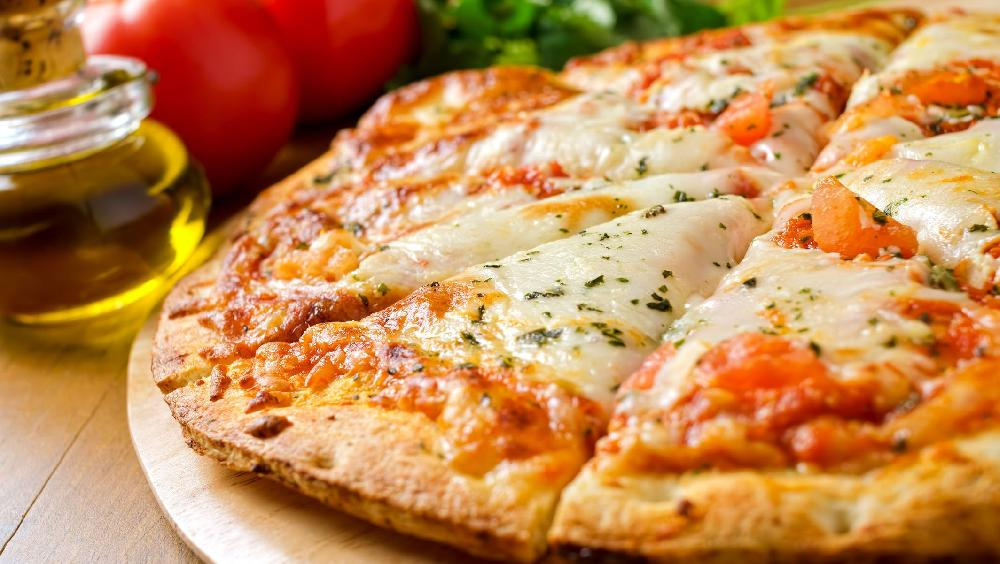

Margherita Pizza
Flavorful Margherita Pizza only includes a few simple and tasty ingredients, like perfectly
melty mozzarella cheese and fresh basil. My easy version includes a homemade whole wheat pizza
dough and scratch-made tomato sauce, but can also be made using store bought staples and your
choice of toppings. Try this Italian-inspired Margherita recipe for your next pizza party or weekend movie night!

Ingredients
For Dough :
- 3 cups whole wheat flour or 360 grams whole wheat flour
- 1 teaspoon instant yeast or rapid rising yeast, 3 grams (check notes for dry active yeast or fresh yeast)
- ½ teaspoon sugar
- 1 teaspoon salt
- 1 tablespoon lemon juice
- 3 tablespoons olive oil
- 1 cup water – you can also add 1.25 cups water or add as required
For Toppings :
- ½ cup Pizza Sauce or pasta or marinara sauce – as required
- 200 grams fresh mozzarella cheese or shredded mozzarella – can add as required
- vegetarian parmesan cheese – as required (optional)
- 20 to 25 basil (fresh) or add as required, optional
- dried oregano – as required (optional)
- red chili flakes – as required (optional)
Instructions
Making Dough :
- Take the instant yeast, sugar and water in a mixing bowl or in the stand mixer bowl. Mix thoroughly.
- Add in the whole wheat flour, salt, olive oil and lemon juice.
- Attach the bowl to a stand mixer with the hook attachment. On a medium-high speed knead the dough.
If kneading with hands, then mix everything very well and then knead for atleast 8 to 10 minutes.
- The dough should be smooth, pliable and soft. If the dough looks dry, add some water while kneading.
If the dough looks sticky, sprinkle some flour. Depending on the quality of flour, you may add add less or
more water.
- Spread some water all over the dough.
- Cover with a lid or a kitchen towel and allow to leaven for 45
minutes to 1 hour or until the dough increases in volume and doubles up.
- Knead the dough lightly again and then you can directly make pizzas from these. Or you can keep
them covered in a tight box or pan.
Spread some olive oil all over the dough before placing them in the box.
Assembling :
- Preheat the oven to its highest possible temperature for 15 to 20 minutes.
My oven has 250 degrees Celsius (475 degrees Fahrenheit) as the highest temperature.
- Grease a 9-inch pan or tray with some extra virgin olive oil. Sprinkle some flour all over.
You can even use cornmeal or semolina for sprinkling.
- Take a medium to large ball and sprinkle some flour on the dough.
- Roll to a thin pizza having 0.3 to 0.5 cm thickness.
- Carefully lift and place the pizza in the greased baking pan or tray.
- Spread a thin layer of pizza sauce or pasta.
- Add some grated vegetarian parmesan cheese. If you do not have parmesan cheese, then skip this step.
- Now top with mozzarella cheese or pizza cheese.
Baking :
- Keep the pizza pan on the lower rack near the bottom heating element.
This helps the pizza to get a nice crisp and crusty base. Only use the bottom heating element in the oven.
Also keep your oven’s highest temp. My oven has 250 degrees celsius (475 degrees Fahrenheit) as the highest.
- Bake the pizza for 10 to 15 minutes until the base gets golden and the cheese also melts.
- Top with some torn fresh basil leaves.
- You can also add dried oregano or red chili flakes if you want.
Drizzle some extra virgin olive on the margherita pizza before serving.
- Cut with a pizza cutter or knife and serve margherita pizza.